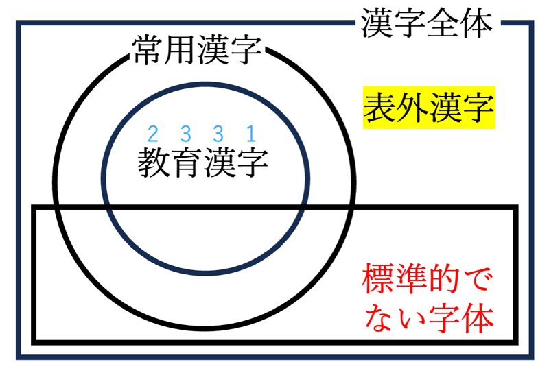

学年別教育漢字、常用漢字表外漢字と、標準的でない字体をチェックします。
ご利用の前に使い方をお読みください。
本バージョンでは、教育漢字外の常用漢字を淡いブルーアミで表示します。
また、小学五年生以上で学習する漢字をグリーンアミで表示します。
凡例：

※クリックで拡大します
※標準的でない字体があった場合の、各字体の出現数をカウントしています。
テキストを変更した際は、再度「リスト表示」ボタンを押してリストを更新してください。